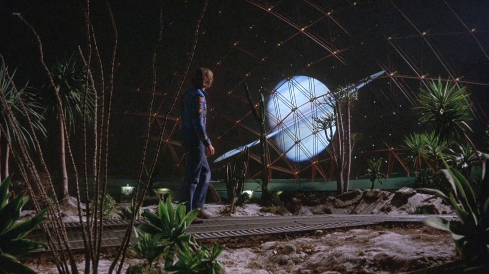

Like many authors, my ideas behind the book series that would consume my life came significantly before my ability and focus to write it.
It began in 2003, when I was having a tough time of things, suffering from depression, and dealing with significant toxicity at work.
Staying at a friend's house for a weekend, I noticed a book on their shelf belonging to Arthur C Clarke. I associated books like this as a form of comfort food of my teen years and as I reread this one it reignited my passion.
At the time, we were talking about how we were ten years away from returning to the Moon (this time as the Constellation program, which would be cancelled a few years later). This has been a theme throughout my life - since the late seventies everyone has talked about how a return to the Moon is only ten years away. And yet, it never actually got any closer (I know as I write this, we might actually be closer thanks to Artemis, but still, it remains to be seen).
Over the weeks that followed, I had this vision of a somewhat difficult teenager with an attitude moving from the Earth to the Moon, and finding the change of scene difficult. That was my hook to get me started!
With a passionate hunger, I tried to work out what a colony on the Moon would be like, and how it would function, reading everything I could about planned colonies, where ice was likely to be found, how scientists had grown plants in samples of Lunar soil brought back from Apollo. I was obsessed with my colonists trying to grow their own food and air there in something like the giant domes from Silent Running.
Life on the Moon would be all about recycling water and technology as well as growing what you eat (meaning mainly vegan). There's no doubt about it, for an Earth girl, it would be a shock to the system.
This was my starting point, but it took several goes to get it right. I realised I wanted to talk about 'adult' themes ' about feeling alone, dealing with sexual harassment, discovering your sexuality, dealing with mental health and loss.
I say 'adult' because a lot of these are seen as 18+ issues, but the horrid truth is that these topics are very prevalent in the overwhelming life of teenagers (I'd certainly experienced it), and waiting until 18 to talk about them, is leaving it too late.
Along the way, Melody won me over and became less of a brat, and more someone with passion who was trying to do their best in difficult situations and someone I wanted to champion more.
I'd have a go at writing this almost annually, but not be pleased with the result. It was finally in 2008 that it would start to take shape, and I was encouraged to keep at it by my best friend, Violet. A big thing she encouraged me about was Melody being gay. It felt to me originally like it didn't belong in a science fiction story, and I kept wondering about removing it, but Violet reassured me that it belonged, and it mattered.
Violet sadly passed away in 2010, but there's not a day of writing that I don't remember her passion and a wish to share this story with her. I often think about her encouragement to 'make it gay'. Because when I did, I found what I was writing moved over from something I thought was intriguing to something I had such a passion for.
And here I am, close to finishing book four!
Intrigued? I'd hoped so! You can find the books on Amazon. Once the series is complete, I'm looking to publish a compendium on other platforms.